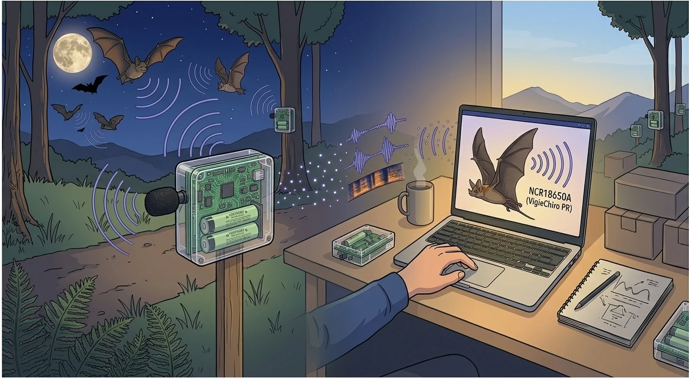

Présentation du projet¶

Aperçu des exigences¶
VigieChiro est un programme de sciences participatives porté par le Muséum national d'Histoire naturelle (MNHN) dans le cadre de Vigie-Nature. Il s'appuie sur un réseau de bénévoles - naturalistes amateurs ou professionnels, gestionnaires d'espaces naturels, associations - qui installent ponctuellement des enregistreurs ultrasons sur le terrain pour suivre l'évolution des populations de chauves-souris en France métropolitaine.
Une partie de ce réseau utilise un Passive Recorder (PR) open-hardware basé sur la plateforme Teensy, dont le firmware est développé en open-source (PiBatRecorderProjects/TeensyRecorders). Le PR est laissé seul sur un point d'écoute pendant une nuit entière. Il s'allume au crépuscule, enregistre tout signal ultrason détecté en bande 8-120 kHz à 384 kHz d'échantillonnage, et se rendort à l'aube. Une nuit peut produire plusieurs centaines à plusieurs milliers de fichiers WAV - le sample fourni en contient 1572 - accompagnés d'un journal technique (LogPR<sn>.txt) et d'un journal de température / hygrométrie (PaRecPR<sn>_THLog.csv).
Une fois la nuit terminée, le possesseur du PR récupère la carte SD, extrait les fichiers sons produits, les renomme / découpe / ralentit ×10 par l'utilisation de deux logiciels distincts (LupasRename pour le renommage, Kaléidoscope pour le découpage et l'expansion de temps), puis dépose les enregistrements obtenus sur la plateforme VigieChiro, qui les fait passer dans le pipeline d'analyse automatique Tadarida (logiciel scientifique de classification développé dans le cadre du programme Vigie-Nature du MNHN). Tadarida découpe les WAV en évènements sonores, les classifie en taxons (espèces de chauves-souris, mais aussi bruit ambiant, oiseaux, mammifères terrestres et insectes), et restitue le résultat sous forme d'un CSV d'observations. Le possesseur du PR doit ensuite valider ou corriger les espèces proposées par Tadarida avant que les données ne soient consolidées dans la base nationale.
Aujourd'hui, ce travail de suivi des campagnes et de pré-validation des observations combine plusieurs outils : explorateur de fichiers, tableur, lecteur audio, plateforme VigieChiro en ligne. Il gagnerait à être unifié dans un outil unique pour rendre la démarche plus fluide et plus accessible.
Objectifs principaux¶
L'application à développer doit permettre au possesseur d'un Passive Recorder d'enchaîner sa chaîne de production nocturne dans un outil unique, depuis la récupération de la carte SD jusqu'au dépôt sur Vigie-Chiro.
Chaîne fil rouge (cible MVP, MUST)¶
Cette chaîne remplace entièrement les outils manuels actuellement utilisés (LupasRename pour le renommage, Kaléidoscope pour le découpage et l'expansion temporelle ×10) :
- Déclarer un site de suivi : enregistrer dans l'application les n° de carré et les codes des points d'écoute qui ont été créés en amont sur le portail Vigie-Chiro (P1).
- Importer une nuit d'enregistrement : copier de manière protégée les WAV bruts + journal + climat depuis la carte SD, les renommer avec le préfixe
CarXXXXXX-AAAA-PassN-YY-, et transformer chaque enregistrement en séquences de 5 s ralenties ×10 (P2). - Vérifier l'enregistrement par échantillonnage : sound check global avant dépôt - écouter quelques séquences réparties sur la nuit pour confirmer que l'audio est exploitable, et saisir un verdict (
OK,Utilisable,Inexploitable) (P3). - Préparer et déposer sur Vigie-Chiro : vérifications de cohérence, puis téléversement direct depuis l'application (repli navigateur possible hors connexion) et lancement de l'analyse (P4).
Approfondissements (SHOULD)¶
- Naviguer dans plusieurs sites et passages via une vue tabulaire performante, indispensable dès qu'on dépasse 3-4 sites (cas Karim et Samuel, P5).
- Diagnostiquer le matériel : visualiser les courbes de température / hygrométrie, le niveau de batterie, les évènements anormaux du journal du capteur (P6).
Cible étirable (SHOULD, filet de sécurité)¶
- Valider les résultats Tadarida : 24-48 h après le dépôt, charger le CSV de résultats fourni par la plateforme, écouter / visualiser chaque observation, et valider ou corriger la classification automatique avant ré-injection (P7). C'est le filet de sécurité si le périmètre s'étend au-delà du fil rouge.
Exigences transverses¶
L'application doit également :
- respecter les normes d'accessibilité afin que des utilisateurs souffrant de déficiences visuelles légères puissent l'utiliser confortablement (contraste, taille de police, raccourcis clavier) ;
- fonctionner hors-ligne : une nuit de terrain peut produire des giga-octets de données et l'utilisateur doit pouvoir travailler sans connexion ;
- être portable sur Windows, Linux et macOS sans installation système lourde.
Le commanditaire : Samuel Busson (CEREMA)¶
🎯 Le commanditaire n'est pas fictif : Samuel Busson, doctorant écologue au CEREMA (équipe Climat & Territoires de demain, Département Territoire Ville et Bâtiment, Groupe Territoire, site d'Aix-en-Provence). Sa thèse porte sur l'effet de l'éclairage public LED sur l'activité acoustique des chiroptères, et en particulier sur l'influence de la visibilité des sources lumineuses sur l'activité des chauves-souris et des insectes volants.
Une précédente campagne expérimentale, liée à un autre projet, s'est appuyée sur 13 secteurs de Seine-et-Marne et a généré plus de 560 000 contacts chiroptères validés via Tadarida. Pour avaler ce volume, Samuel a dû développer avec ses collègues informaticiens des scripts R / Bash de pré-traitement - efficaces mais impossibles à transmettre.
Pour ses futures campagnes, Samuel pivote vers le Passive Recorder Teensy (PiBatRecorderProjects/TeensyRecorders), qu'il a choisi pour sa qualité d'acquisition, son ouverture open-source et son accessibilité à la communauté scientifique. Mais l'écosystème logiciel du PR est rudimentaire : le VigieChiro Companion est l'outil qui manque à Samuel et à la communauté pour exploiter sereinement le PR. Voir sa fiche persona détaillée : Samuel.
Parties prenantes¶
| Acteur | Rôle |
|---|---|
| Samuel Busson (CEREMA) | Commanditaire réel. Exprime le besoin et donne un avis qualitatif sur l'application. |
| Possesseur de PR (utilisateur principal) | Naturaliste amateur ou professionnel qui exploite un PR. Il installe l'appareil sur le terrain, récupère la carte SD, importe les données dans l'application, valide les classifications, exporte vers VigieChiro. La plupart ne sont pas informaticiens : l'application doit être abordable. |
| Plateforme VigieChiro (système amont/aval) | Reçoit les fichiers du possesseur et restitue les CSV Tadarida. L'application n'a pas à dialoguer en direct avec la plateforme - les échanges se font par téléversement / téléchargement de fichiers. |
💡 L'application reste mono-poste : pas de gestion d'équipe, les données vivent en local. Elle se connecte toutefois au compte Vigie-Chiro de l'observateur (par jeton) pour déposer, synchroniser ses sites et récupérer les résultats.